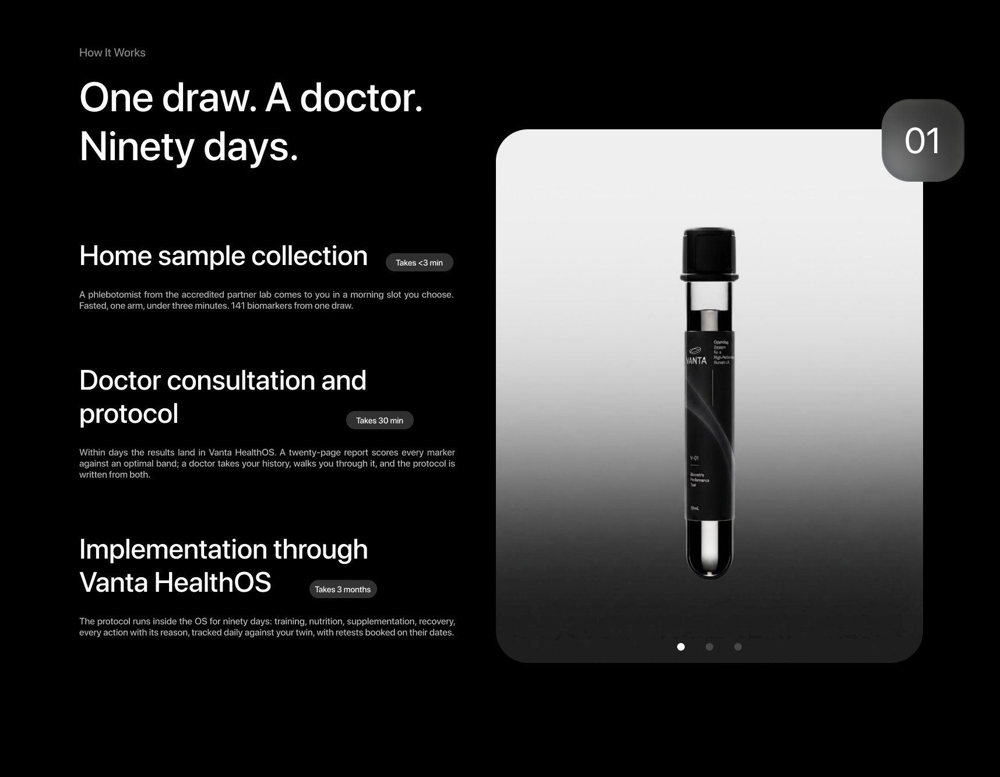
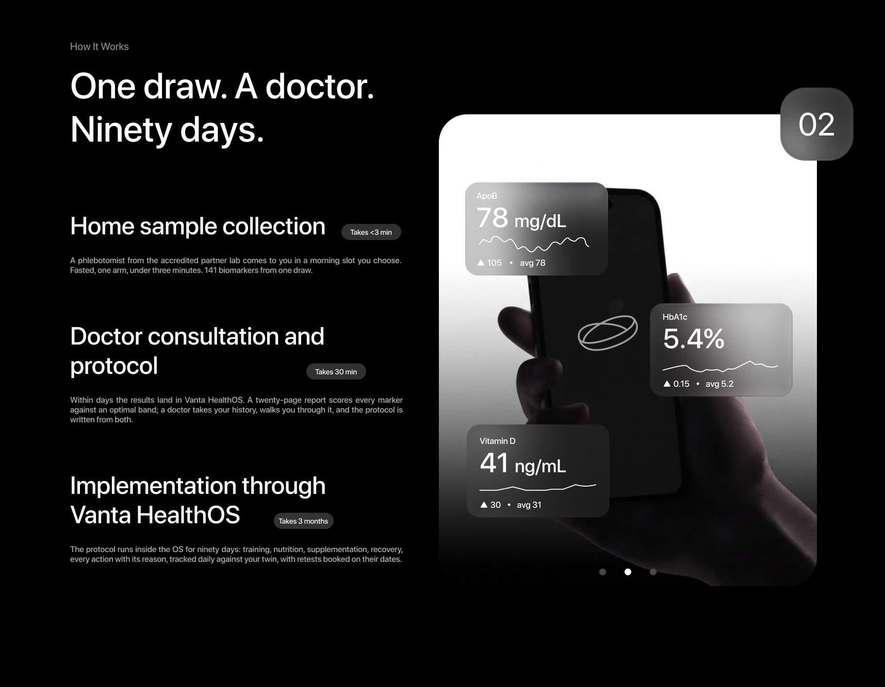
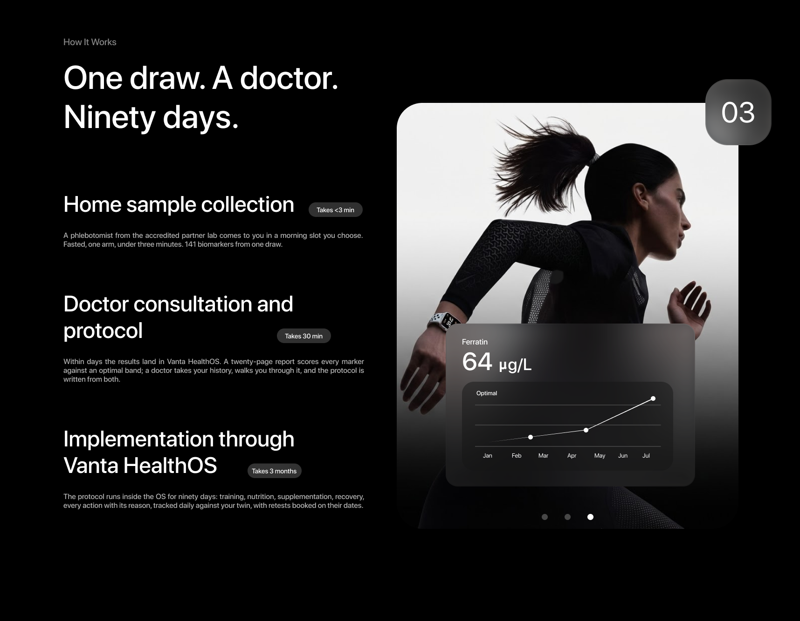

141 biomarkers from one fasted draw at your door, read across 11 systems. Open any marker for what it tells you, and the unit it comes back in.
The screening shelf — antibodies, heavy metals, PSA and the urine study — is listed, not scored; a positive is routed to a doctor. Units are as the partner lab reports them. A wellness reading, not a diagnosis. Vanta HealthOS does not diagnose, treat or prevent any disease.
How It Works
A phlebotomist from the accredited partner lab comes to you in a morning slot you choose. Fasted, one arm, under three minutes. 141 biomarkers from one draw.
Within days the results land in Vanta HealthOS. A twenty-page report scores every marker against an optimal band; a doctor takes your history, walks you through it, and the protocol is written from both.
The protocol runs inside the OS for ninety days: training, nutrition, supplementation, recovery, every action with its reason, tracked daily against your twin, with retests booked on their dates.



Our other panels